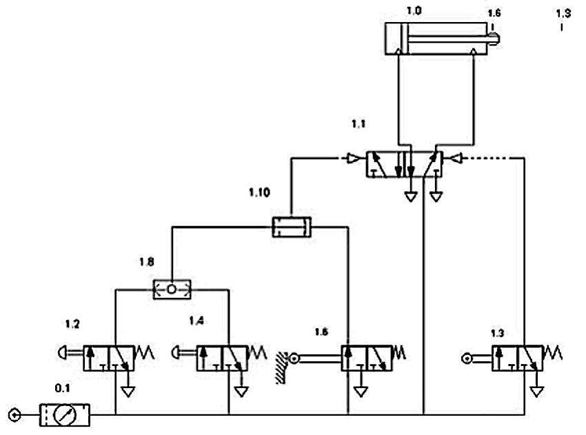
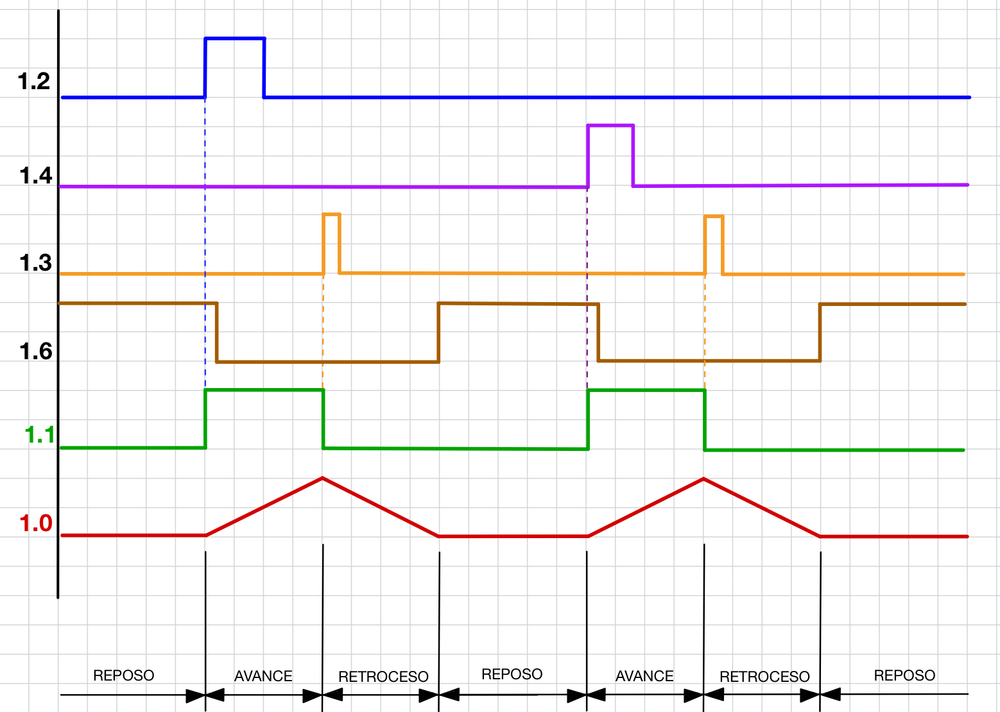
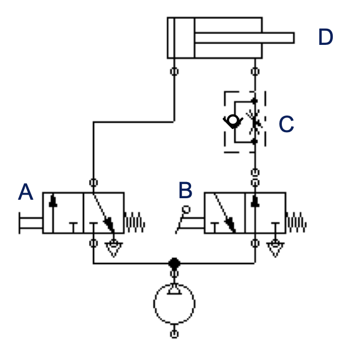
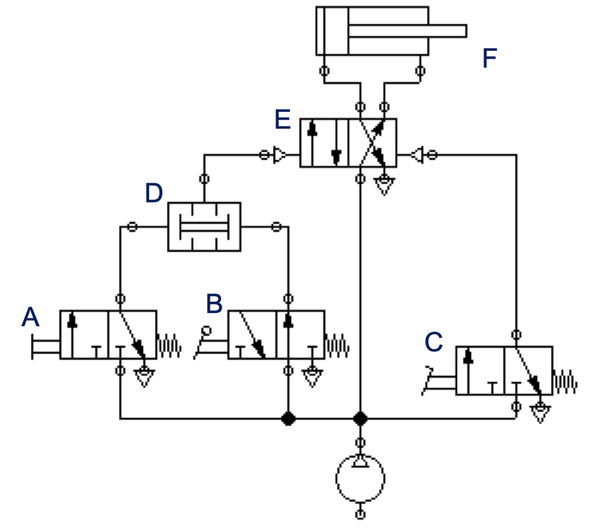
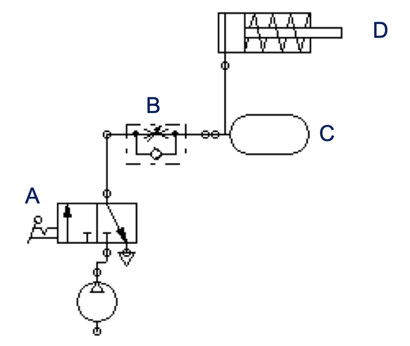

En este vídeo tienes un resumen de todos los componentes básicos de un circuito neumático. Nos servirá para recapitular y repasar todo lo estudiado. El circuito en sí consiste en controlar un cilindro de doble efecto con una válvula 5/2, pero es interesante por la explicación detallada que da de cada componente:
Normalización en circuitos neumáticos
Cuando diseñamos un circuito neumático tenemos que pensar cómo conectar los diferentes elementos del circuito entre sí y dibujar el esquema del mismo. Los circuitos neumáticos se esquematizan utilizando la simbología que hemos ido viendo al estudiar los componentes por separado. Sin embargo, además de los símbolos, es muy importante la correcta identificación de los diferentes elementos en el circuito, así como su distribución dentro del esquema.
En este vídeo tienes las normas más importantes que hay que seguir a la hora de diseñar un circuito neumático:
Análisis de circuitos neumáticos
Para analizar un circuito neumático dado, hay que seguir una serie de pasos. Los vamos a ver mediante un ejemplo para fijar ideas. Se trata de analizar el siguiente circuito neumático:

1-Identificar los elementos del circuito
Lo primero siempre es identificar los componentes del circuito, empezando por los receptores o actuadores. Hay que ser claro, escueto y sencillo a la hora de describir los elementos:
- 1.0. Cilindro de doble efecto en la posición inicial con el vástago replegado.
- 1.1. Válvula distribuidora 5/2, de pilotaje neumático.
- 1.2. y 1.4. Válvulas de mando 3/2, monoestables, normalmente cerradas (NC), con pilotaje manual mediante pulsador y recuperación por resorte.
- 1.3. y 1.6. Válvulas de mando 3/2, monoestables, normalmente cerradas (NC), con pilotaje mecánico por rodillo y recuperación por resorte.
- 1.8. Válvula selectora (OR)
- 1.10. Válvula de simultaneidad (AND)
- 0.1. Equipo acondicionador de aire comprimido, formado por tres elementos, un filtro, un regulador y un lubricador (unidad FRL)
2-Describir el estado inicial del circuito
La válvula AND 1.10 está bloqueada porque solo le llega presión por uno de sus lados (desde la válvula 1.6, que se encuentra accionada en el instante inicial, ya que las demás válvulas de mando están bloqueadas).
La válvula 1.3. se encuentra en su posición de reposo NC, por lo que también está bloqueada.
Por lo tanto, la válvula 5/2 permanece en reposo (no le llega presión a ninguno de sus accionamientos) y el cilindro se encuentra retraído al recibir presión por su lado derecho.
3-Explicar lo que sucede a partir de la señal que desencadena el funcionamiento del circuito
El circuito inicia su funcionamiento cuando se acciona cualquiera de las válvulas 1.2 o 1.4.
Al accionar una de ellas, la válvula OR se activa y deja pasar presión hacia la válvula 1.10.
Como la válvula 1.10 ya tenía presión en su otra entrada, se activa (ahora tiene las dos entradas presurizadas a la vez) y deja pasar presión para accionar la válvula 1.1
La válvula 1.1. se acciona al llegarle presión por su lado izquierdo y cambia de estado, haciendo que el aire a presión entre en el cilindro por la parte izquierda y la parte derecha quede abierta a la atmósfera. Por lo tanto, el cilindro 1.0 realiza su carrera de avance.
Cuando el cilindro 1.1 sale del todo, activa el rodillo de la válvula 1.3, lo que provoca el accionamiento de esta y que llegue aire a presión por la derecha a la válvula 1.1, provocando su accionamiento.
Al accionarse la válvula 1.1 desde la derecha, vuelve a su posición inicial, haciendo que el aire a presión entre por la derecha del cilindro y comience la retracción de éste.
Al retraerse el cilindro, se activa el rodillo de la válvula 1.6 y el circuito queda de nuevo en su estado inicial de reposo hasta que se vuelva a accionar manualmente alguna de las válvulas 1.2 o 1.4.
4-Dibujar los cronogramas de los elementos principales del circuito
Dibujamos los cronogramas para los casos en que se pulse 1.2 o se pulse 1.4:

Ejercicios de análisis de circuitos neumáticos
Para cada uno de los siguientes circuitos, numera los diferentes elementos según normas y analiza su funcionamiento:
Circuito 1

Circuito 2

Circuito 3
